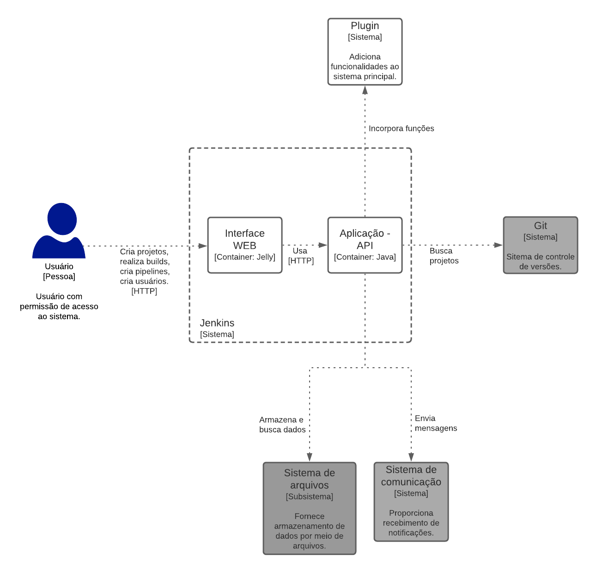

Documentação arquitetural do Jenkins
Autor
Este documento foi produzido por Cássio Cordeiro.
- Matrícula: 116210038
- Contato: cassio.cordeiro@ccc.ufcg.edu.br
- Projeto documentado: https://github.com/jenkinsci/jenkins
Jenkins
Este documento descreve parte da arquitetura do Jenkins. Essa descrição foi baseada principalmente no modelo C4.
Descrição
O Jenkins é projeto focado em ser expansível às necessidades dos usuários, contendo um vasto acervo de plugins criados e permitindo configurações personalizadas, suas principais usos são para atividades de CI (continuous integration) e CD (continuous delivery). Ele automatiza as partes do processo de desenvolvimento de software relacionadas ao build, testes, deploy e entrega. Outras informações podem ser encontradas no site oficial do sistema.
Objetivos
Oferecer um serviço que seja customizável e expansível aos requisitos dos projetos e de cada usuário, automatizando tarefas repetitivas no processo de desenvolvimento de software.
Contexto
Os principais sistemas que o Jenkins se comunica são seus plugins, que quando instalados, acrescentam mais funcionalidades ao sistema e a possibilidade de comunicação com outros sistemas; o Git, podendo realizar processos com projetos hospedados nele; e serviços de comunicação, sendo capaz de enviar mensagens, contento, principalmente, o resultado de operações de build.

Containers
O sistema é composto basicamente por dois containers: a interface web e a aplicação (API). O primeiro, possibilita interação com o usuário, é feito usando Jelly e renderizado do lado do servidor. Já o segundo, gerencia toda a parte de projetos, de dados e comunicação externa.

Abaixo estão alguns exemplos de como são processados os paths:
- Get: /log/… → Jenkins#getLog()
- Busca o arquivo log do sistema.
- Get com argumentos: /job/foo/… → Hudson#getJob(“foo”)
- Busca um job chamado foo.
- Get dinâmico: /job/foo/1/… → Job#getDynamic(“1” …)
- Busca o build 1 do job foo.
- Método de ação: /job/foo/1/artifact → Run#doArtifact(…)
- Executa o método doArtifact no build 1 do job foo.
Quanto à implantação, o Jenkins pode ser instalado em qualquer máquina. Ele possui compatibilidade com os principais sistemas operacionais, Linux, MacOS e Windows, além de poder ser instalado usando o Docker ou na nuvem.
Componentes
O sistema é composto por 6 componentes principais:
- Componente de segurança: seu principal papel é prover autenticação e controle de acesso aos recursos. Ele recebe do gerenciador de usuários as informações necessárias para prover seus serviços.
- Gerenciador de usuários: realiza todo o controle de usuário, como cadastro, atualização e controle de permissões. Os dados são lidos e escritos usando o controlador de dados.
- Gerenciador de plugins: controla tudo relacionado aos plugins.
- Gerenciador de projetos: responsável pelo gerenciamento das ações relacionadas aos projetos, por conectar com o git e enviar notificações.
- Controlador de dados: escreve e lê os dados do sistema de arquivos, utilizando o XStream. Fornece dados para outros componentes.
- Componente de estatísticas: utiliza o histórico das builds dos projetos para criar estatísticas e indicar tendências.

Visão de Informação
Todas as informações giram em torno dos projetos. Os usuários recebem permissões para visualizar, editar e realizar ações neles. Durante o build são executadas as pipelines, caso ocorra algum erro, a build entra no estado de erro, caso contrário, de sucesso. Cada resultado é armazenado no histórico e utilizado para gerar informações estatísticas dos projetos.